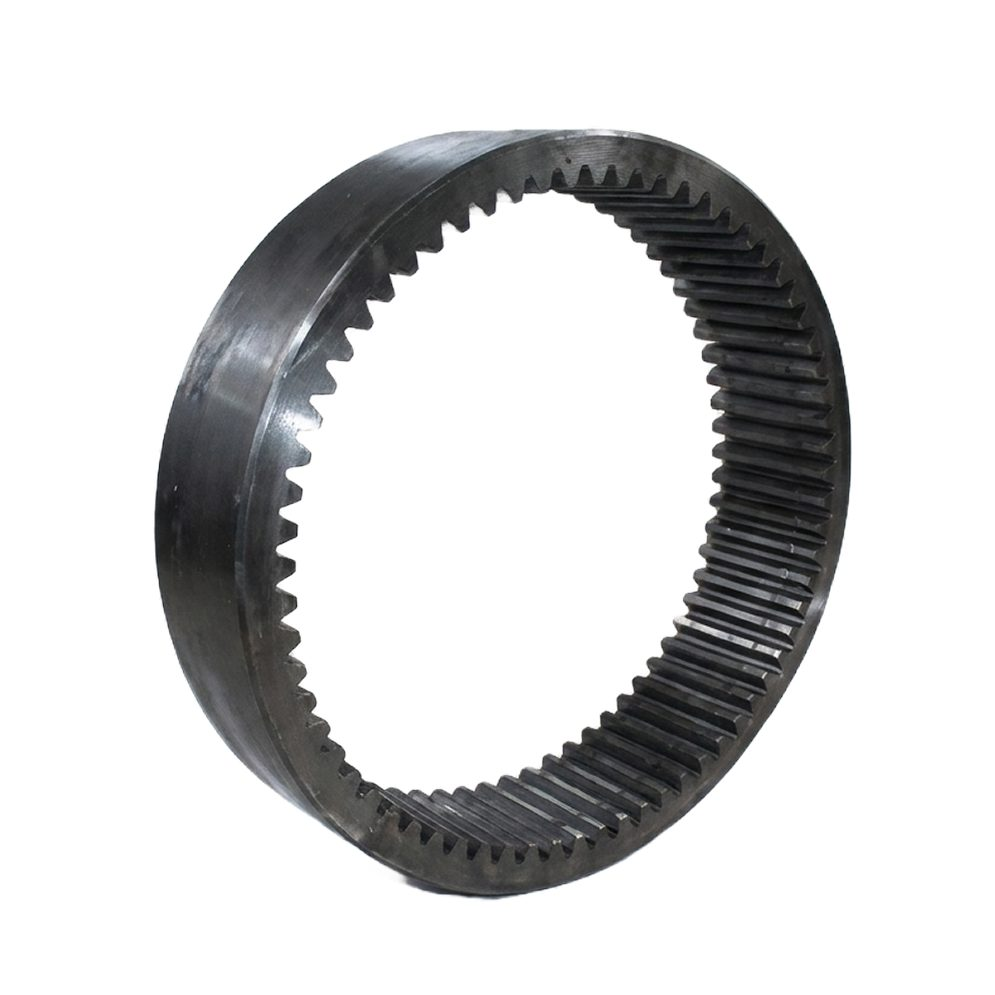
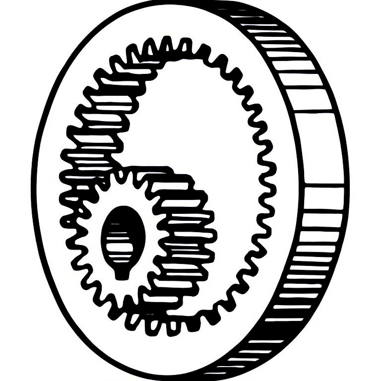

Позвонить: (4842) 75-75-05
Написать сообщение: m-40@inbox.ru
- Главная
- О компании
- Контакты
- Редукторы и мотор-редукторы
- Колеса крановые
- Блоки полиспаста
- Шкивы тормозные
- Муфты
- Крюки и крюковые подвески
- Грузовые барабаны
- Шлицевые детали
- Конические шестерни
- Цилиндрические шестерни
- Запасные части для козловых кранов
- Запасные части для портальных кранов
- Запасные части для башенных кранов
- Техническая информация
- Правовая информация
Цилиндрические шестерни → Передачи с внутренним зацеплением
- Главная
- О компании
- Контакты
- Редукторы и мотор-редукторы
- Колеса крановые
- Блоки полиспаста
- Шкивы тормозные
- Муфты
- Крюки и крюковые подвески
- Грузовые барабаны
- Конические шестерни
- Цилиндрические шестерни
- Шлицевые детали
- Запасные части для козловых кранов
- Запасные части для портальных кранов
- Запасные части для башенных кранов
- Техническая информация
- Правовая информация

ООО «ЦКК» изготавливает цилиндрические шестерни с внутренним зацеплением со следующими характеристиками:
- Класс точности - до 6 включительно;
- Модуль - до 30 включительно;
- Диаметр - до 3 500 мм включительно.
Изготавливаем цилиндрические шестерни с внутренним зацеплением в штучном и серийном производстве. Возможно изготовление по образцам и эскизам заказчика. Индивидуальный подход.

Особым типом цилиндрических зубчатых колес являются колеса с внутренним зацеплением, при котором зубья одного из колес сажаются с внутренней стороны обода. Внутреннее зацепление применяется для получения большей компактности всей передачи.При жёстких ограничениях на габариты, в планетарных механизмах, в шестерённых насосах с внутренним зацеплением, в приводе опорно-поворотных устройст, применяют колёса с зубчатым венцом, нарезанным с внутренней стороны. Вращение ведущего и ведомого колеса в передаче с внутренним зацеплением совершается в одну сторону.
В такой передаче меньше потери на трение и, соответственно, выше КПД.
Зубчатые колеса с внутренним венцом имеют ряд преимуществ: минимизация массогабаритных характеристик механизмов; высокие передаточные отношения (например, в планетарных механизмах) при небольших габаритах редуктора; облегчение компоновки механизмов и машин.
Передачи внутреннего зацепления с каждым годом находят все более широкое применение в силу того, что они по сравнению с передачами внешнего зацепления, имеют ряд преимуществ:
- Наличие большой дуги зацепления;
- Большой коэффициента перекрытия;
- Меньший скольжения профилей зубьев, что способствует уменьшению трения, повышению износостойкости, работоспособности и долговечности зубчатых передач.
Отличительной особенностью таких передач является их компактность, что способствует уменьшению массогабаритных характеристик.
Основное применение зубчатые колеса внутреннего зацепления нашли в оборонной промышленности, судостроении, автотракторной промышленности и в промышленности по производству дорожных машин и оборудования.
В настоящее время известно множество способов нарезания зубчатых колес с внутренними зубьями.
Традиционным и наиболее распространенным методом является метод зубодолбления, который обеспечивает высокую точность и универсальность обработки зубчатых колес данного типа. Метод может быть использован практически на всех типах зубодолбежных станков. В качестве инструмента применяются дисковые, чашечные и хвостовые долбяки. Зубодолбление характеризуется наличием рабочих ходов инструмента, во время которых происходит формообразование профиля зуба, и наличием холостых ходов, что обусловливает низкую производительность данного метода и является существенным недостатком.
Помимо этого для обработки зубчатых колес внутреннего зацепления в ряде случаев используется фрезерование дисковыми фрезами по методу единичного деления. Обработка осуществляется на зубофрезерных станках, которые комплектуются специальной головкой, устанавливаемой вместо фрезерного суппорта. Инструмент - дисковая модульная фреза предназначена для нарезания определенного колеса. Производительность и точность (не лучше 10 степени точности по ГОСТ 1643-81) при использовании упомянутой технологии обработки колес даже ниже, чем при традиционном зубодолблении.
Для изготовления крупномодульных зубчатых колес примененяют пальцевый инструмент. Однако этот метод очень ограничен в применении. Для нарезания зубчатых колес с внутренними зубьями применяют также червячные фрезы-улитки, работающих по методу копирования с непрерывным делением. Фреза устанавливается на шпинделе специальной головки. При этом один зуб фрезы является калибрующим. Как и в предыдущих случаях, производительность и точность метода недостаточно высокие.
Изготовление зубчатых колес с внутренним венцом возможно с применением цилиндрических протяжек. Метод протягивания является наиболее производительным и точным. К недостаткам метода следует отнести сложность и высокую стоимость инструмента, необходимость создания специальных станков, развивающих большие усилия, и ограничение диаметра обрабатываемых колес.
Основным недостатком всех вышеперечисленных методов обработки является низкая производительность, а в ряде случаем, исключая зубодолбление и протягивание, низкая точность обработки. Кроме этого все инструменты за исключением долбяков и дисковых фрез являются сложными и дорогими.
Геометрические параметры зубчатых колес внутреннего зацепления могут быть рассчитаны по принципу стандартного внешнего зацепления, обращенного внутрь, с головками и ножками во встречных направлениях. Однако для предотвращения подрезания зубьев и улучшения формы и работы зубьев рекомендуется увеличить внутренний диаметр охватывающего зубчатого колеса и, соответственно, увеличить наружный диаметр малой шестерни.
Зубчатые колеса внутреннего зацепления обычно нарезают круглым долбяком методом обкатывания. Чтобы избежать интерференции между головкой зуба долбяка и переходной поверхности зуба колеса при врезании и радиальном отводе долбяка, а также срезания уголков на вершине зуба колеса, долбяк должен быть меньше, чем сопряженная с нарезаемым внутренним колесом шестерня.
Наладка станка на нарезание зубчатых колес внутреннего зацепления производится по тем же формулам, что и для колес наружного зацепления. Различие заключается лишь в том, что при нарезании зубчатых колес внутреннего зацепления направления вращения долбяка и заготовки одинаковы, тогда как при нарезании колес наружного зацепления они противоположны.
Зубчатые колеса внутреннего зацепления шевингуют на специальных станках или на шевинговальных станках для колес с внешним зацеплением, имеющих приспособление для внутреннего шевингования. Колеса с шириной зубчатого венца свыше 20 мм обрабатывают методом параллельного шевингования. Цикл работы станка аналогичен циклу шевингования колес с внешним зацеплением. Зубья шевера имеют небольшую бочкообразность, чтобы избежать интерференции с зубьями обрабатываемого колеса.
Зубчатые колеса, имеющие ширину венца менее 20 мм, или со ступицей, ограничивающей возвратно-поступательное движение, обрабатывают врезным шевингованием.
По сравнению с передачами наружного зацепления цилиндрические передачи с внутренним зацеплением имеют во много раз меньшее относительное скольжение рабочих поверхностей зубьев, меньшее удельное давление между рабочими поверхностями зубьев и меньшие размеры при сравнительно большом передаточном отношении и малом межцентровом расстоянии. Однако они не получили большого распространения, поскольку они более сложны в изготовлении и при их применении не обеспечивается достаточная жесткость валов вследствие консольного расположения колеса и шестерни.
По вопросам изготовления цилиндрических шестерен с внутренним зацеплением обращайтесь в отдел продаж по телефону:
(4842) 75-75-05
ЦКК
Центр крановых компонентов
г. Калуга, ул. Комсомольская роща, д. 39
© 2026 ООО «Центр Крановых Компонентов»
ИНН 4000026221 · КПП 400001001